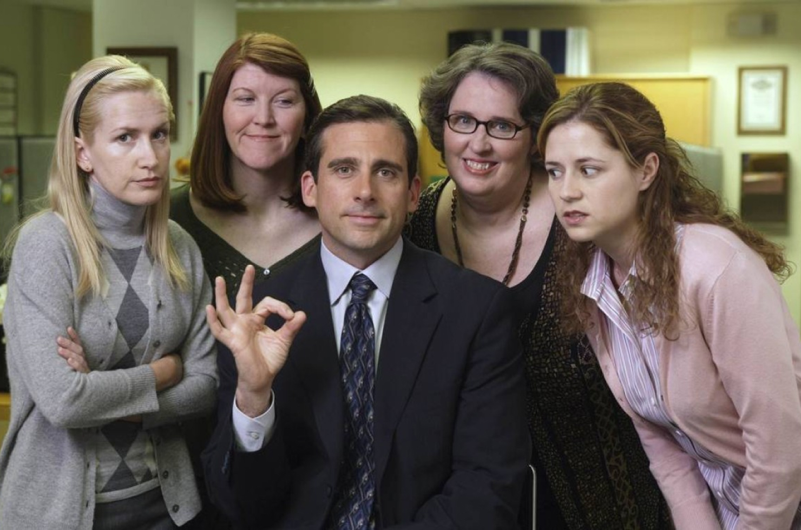

- Sitcom
- 9 temporadas
- 2005
The Office acompanha o dia a dia da Dunder Mifflin, uma empresa de papel, liderada pelo desajeitado Michael Scott. A série foca nas interações entre os funcionários, como Jim, que se interessa por Pam, e o excêntrico Dwight, com humor baseado em situações constrangedoras no ambiente de trabalho.
